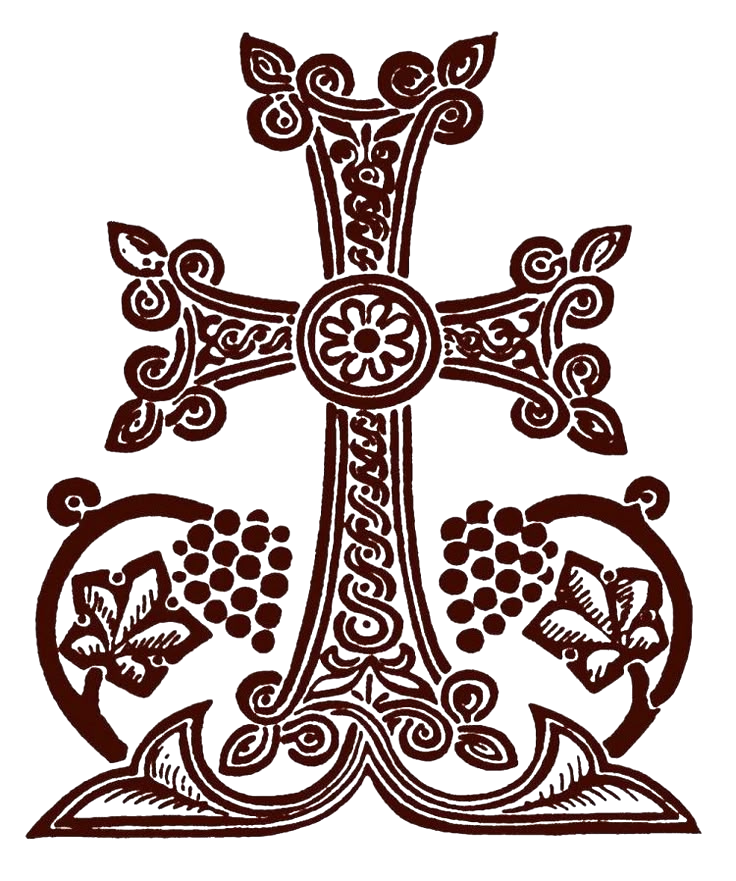

Preek van 3 Augustus 2025God heeft ook vandaag, op deze zondag, ons waardig geacht om samen te komen in Zijn huis, in deze kerk. En met deze gelegenheid roep ik de Heilige Geest aan, dat Hij mijn hart en denken opent, zodat wij samen Zijn goddelijke woorden kunnen begrijpen. Mogen wij de betekenis vatten van deze parabel, dit verhaal dat op het eerste gezicht eenvoudig lijkt, maar dat diepe en bijzondere inzichten bevat die ons geestelijk leven kunnen verrijken. Het gaat om de gelijkenis van het verloren schaap, het verloren muntstuk en de verloren zoon. Deze komen alle drie voor in het Evangelie van Lucas en ook in het Evangelie van Mattheüs. Jezus sprak deze woorden tijdens Zijn verkondiging, en bracht deze boodschappen op een wijze die begrijpelijk was voor de mensen van die tijd, maar die tegelijk diep theologisch en spiritueel geladen zijn. De eerste vijf boeken van de Bijbel, die wij de Pentateuch noemen, vormden de basis van het onderricht in de synagogen. Jezus predikte vaak binnen deze structuur. Een van de verhalen die Hij gebruikte, is de gelijkenis van het verloren schaap. Als wij deze gelijkenis lezen, die van het verloren schaap dat door de herder wordt gezocht, dan zien we dat het niet zomaar een verhaaltje is. Sommigen interpreteren het als een algemene morele les, maar anderen zien er een onderricht van de Kerk in, waarin de rol van de herder, de gemeenschap, en de terugkeer naar God centraal staan. Jezus zegt ergens tegen Petrus: "Jij bent de rots waarop Ik mijn Kerk zal bouwen." Dat toont aan dat Jezus een gemeenschap wilde vormen, een Kerk, gebouwd op geloof en liefde. In die zin is het verloren schaap niet zomaar een verdwaald dier, maar het beeld van een ziel die afgedwaald is en die teruggebracht moet worden naar de kudde, naar de gemeenschap van gelovigen. In het Evangelie van Lucas zegt Jezus dat de herder de 99 schapen achterlaat in de woestijn om op zoek te gaan naar dat ene verloren schaap. Op het eerste gezicht lijkt dat onlogisch: waarom 99 schapen achterlaten om er één te vinden? Maar in het Koninkrijk van God werkt het niet volgens menselijke logica. In Gods ogen is elke ziel van onschatbare waarde. Het terugvinden van één verdwaalde is reden tot grote vreugde. De herder verlaat de berg, het symbool van Gods nabijheid, en gaat naar de woestijn, symbool van verlatenheid, dorheid en gevaar, om dat ene schaap te vinden. Dat is de diepe boodschap van de gelijkenis: God zoekt actief naar ons wanneer wij Hem zijn kwijtgeraakt. En wanneer Hij ons vindt, tilt Hij ons op Zijn schouders en draagt ons terug. Dat beeld, van de herder die het schaap op zijn schouders neemt, is het beeld van genade. Jezus zegt als het ware: “Jij hoeft de weg niet terug te lopen. Ik draag je.” De herder is niet alleen Jezus als persoon, maar ook een beeld van de Kerk. De Kerk wordt geroepen om ook herder te zijn: om op zoek te gaan naar wie afgedwaald is. Om niet te oordelen, maar te dragen. Om niet te verwerpen, maar te verwelkomen. Dat is onze opdracht als gelovigen. De 99 schapen zijn niet minder belangrijk. Zij staan symbool voor hen die al dicht bij God leven. Maar zij zijn geroepen om mee te zoeken, om het hart van de herder te delen. Soms zijn wij zelf dat ene schaap. Misschien voelen we ons vandaag geestelijk ver weg. Misschien zijn we verdwaald in zorgen, twijfels of zonden. Misschien is onze band met God verzwakt. Misschien zijn we de Kerk ontgroeid of hebben we onszelf buitengesloten. Maar zelfs dan: Hij zoekt jou. En wanneer Hij jou vindt, is er geen veroordeling. Alleen vreugde. “Er is meer blijdschap in de hemel over één zondaar die zich bekeert dan over 99 rechtvaardigen die het niet nodig hebben,” zegt Jezus. Deze preek is geen verhaal over de ander. Het gaat ook over jou. Over ons allemaal. Want wie van ons is niet, op een bepaald moment, verdwaald geweest? De Kerk moet daarom een plaats zijn waar iedereen thuiskomt. Geen elitair clubje, maar een geestelijk huis. Een ziekenhuis voor gewonde zielen. Een plek waar we ons laten genezen, optillen en samen vreugde vinden in de terugkeer. De “woestijn” waarin het schaap zich bevindt, staat ook voor geestelijke dorheid: de innerlijke leegte waarin mensen vandaag leven. Mensen die geen richting meer hebben. Mensen die zich verlaten voelen, ongezien. Maar juist daarheen gaat de herder. Het is niet zo dat de 99 geen zorg nodig hebben, of dat zij volmaakt zijn. Maar in deze gelijkenis ligt de nadruk op het herstel van dat ene, op de vreugde over het terugvinden. Het is een oproep tot besef: ook als je vandaag afwezig of geestelijk ver weg bent, Hij zoekt jou. En als je zelf veilig bent, als je één van de 99 bent, dan word je geroepen om diezelfde liefde te tonen. Ga met de herder mee. Zoek met Hem. Breng iemand terug naar huis. Als we vandaag deelnemen aan de goddelijke liturgie, dan is dat niet alleen een ritueel. Het is de ervaring van thuiskomen. In de Eucharistie ontvangen wij het Lichaam en Bloed van Christus. Daarin wordt onze eenheid met Hem hersteld, wordt onze ziel gevoed, wordt ons hart vernieuwd. En als wij mensen kennen, familie, vrienden, buren, die vandaag afgedwaald zijn, geestelijk verloren zijn, ziek zijn, gebroken of ontmoedigd zijn, laten we hen dan in gebed aan God toevertrouwen. Laten we hen opzoeken, hen liefhebben, hen dragen zoals de herder doet. Moge de Heilige Geest ons verstand openen, onze harten verzachten, en onze ogen richten op de verlorenen. Moge Hij ons maken tot medewerkers van Christus, tot zijn herders op aarde. Vandaag is een mooie, heilige dag. Een dag van herstel. Een dag van vreugde. Moge het ons allen gegeven zijn om deel te zijn van deze vreugde, als zij die terugkeren, of als zij die helpen terugbrengen. Amen.❤️
Աստված այս կիրակի ևս, այս օր ևս, առջևի իրամբեզ, որովհետև հավատքինք այս եկեղեցվով եչ, որովհետև եկեղեցվով եչ, և այս առիթով սուրբ հոգին իմ խնդրեմ, սուրբ հոգին իմ հնդրեմ, որովհետև իմ քանավեր մրկերը նդրակաստերը բանա, որովհետև մենք կարողանանք հասկնալ իր կավապարլերը, կարողանանք հասկնալ ասուզող հոսկը, թե ո՞ւ՞մ այս արակի մենց ունի այն կան յուրահատուկ գեդեր, այն կամ խորում հիմասնել, որ իմ կնաջանցրատաննալ գամ մեր հավարկայկան ուշախյության անշանանչի տացել ենչա. Բրմն այս կորսված ոչխարը, կորսված առագը, կորսված կառնուղը վախվված է երբո ավետարանություները բողվենը, թե վախվված է Մատթեոսի մեջ, և թե վախվված է Ղուկաս ավետարանություները, Ղուկասի մեջ. Եվ ինքը գկարոզեր, հնգամադյանը գկարոզեր, և կարոզած ժամանակ, ինքը այդ մեգը քրիստոնեական ձևով և քրիստոնեական մետոդոլոգիով կկարոզեր սինագոգներում մեջ հնգամադյանը, պերթատեղը. Ինքը դագարանի առաջին հինք ինքերը կկոչվին հնգամադյանը, հինք կիրքերը. Եվ այդ լեռան գետոնները մեկը կորսված ոչխարի առագն է. Որովհետև եթե այն կորսված ոչխարի առագը, որ Հիսուս կպատվություն է, ընդհանուր, կոնտեքստին և բորդանային, մեկնապանն եկնապաններ կսեն, որ մասնակետներ կսեն, որ այդ շրջակիցը եկեղեցական ուսություն է. Եվ ինքը այս կաղապարներով և այս առագներով ձևերով ինք ուզել եկեղեցիմը ինել, եկեղեցիմ առմադավորել. Կիչմը եթե երթանք, այդտեղ Քրիստոս գեպասին կսե թունես կսե ժայռը, որում հրա ես իմ եկեղեցիս վիդիշին եմ կսե, Պետրոսին եղ ինչ կուզայիր են. Կիչմը երթանք, այդտեղ երթանք, այդտեղ երթանք, այդտեղ երթանք, այդտեղ երթանք, այդտեղ երթանք, այդտեղ երթանք, այդտեղ երթանք, այդտեղ երթանք, այդտեղ երթանք, այդտեղ երթանք, այդտեղ երթանք, ա դա հայդել են, եթե Քրիստոս կղոսը այս կորսըված ոչխարի մասին. չի հաստատել, որ իսկապես մարդը կորսենցության ունենք ոչ հանդերնով, հանը հարցումը թերյական է, թերյական նդշանագ է, բան չի կա, հաստատում չի կա, մեջ ենթադրություններ, եթե ծեզմե մեկը հարյուր ոչխար ունենա, և եթե այդ մեկը կորսենցն է, չիցիք եր նսել 99 լեռան վրա, շատ տարևոր այս լերպարը, էսի լերներում վրա իմ նվածը, չէ Մատթեոսը, մոշտ է լեռան վրա իմ նվածը, բայց ինքը լեռան կաղապարը շատ չէ շտ նված է, կսել, որ լեռան վրա չիցիք էլ 99 լեռան վրա ոչխարներ, և չէ տարևոր այդ մեկադը թնվելու եդևան Ղուկասին մենչ, կսել, որ 99 լեռան մեկադը անապատին մենչ և ոչ է լեռան վրա. Նեսակ այսպես կիտարպեմ կյուններում մասին է, այսպես կյուններում մասին է, որ այսպես կյուններում մասին է, որ այսպես կյուններում մասին է, որ այսպես կյուններում մասին է, որ այսպես կյուններում մասին է, որ այսպես կյուններում մասին է, որ այսպես կյունն երկոր ձեղնագա, առագը կարդայի՛. Եվ գնայի՛ք ամե մեկները ինչ ձևով ներկայացվազան. Այսպես ավելի այսպես տիմ բադրամաստվություններում բրա մուշատրություն կետրոնացնելով, Ավելի կարդակ որը հասկտված չա, ունչ տսել գուզեք Քրիստոս. Եվ այդ մաստակետներ կսեմ, որ ոչ թե մեկ առագի երբու ներկայացումներն են, այդ իսկապես կսեմ, որ Քրիստոս այս առագը, այս բատկերը ես ենք երբ անգամ խոսած է, երբ դարբեր առիթներով խոսած է, որ նաև Քրիստոս ինքնինք կներկայացնել. որպես իրավ հովիր կներկայացնել, ժշմարիտ հովիր կներկայացնել, և էսի, որ այստեղ Քրիստոս ուզեր եկեղեցին կիմներին, որովհետև այդ տեղ եկեղեցի պարը շատ կիչ ապտակործված է եկեղպանի վերջ, նորդիտագարանի մեջ շատ կիչ, որ եկեղեցի ապարը չեմ ունարը, մի այն Մատթեոսի ավետարանի մեջ օգտակործված է երեկ տամ հինգ անգամ, որոնց մի մեկը այս եկեղեցքով հաստանվան այս ընդհանով կոնտեքսին մեջ դե օգտակործված է եկեղեցի ապարը, որովհետև այդ ժամանակ եկլեզ է, որը նշանակել հավատականություն, շողով, բոլոր միասին գուկան եվ ասուզով զասված կպարապանեն, կմեծարեն, այդ հավակականության անում եմ եկեղեցի, որ եկլեզ եմ եկեղեցի, որովհետև այդ ժամանակ եկլեզ է, որովհետև այդ ժամանակ եկլեզ եմ եկեղեցի, որովհետև այդ. ժամանակ եկլեզ եմ եկեղեցի, որովհետև այդ ժամանակ եկլեզ եկլեզ եկլեզ եկլեզ եկլեզ եկլեզ եկլեզ եկլեզ եկլեզ եկլեզ եկլեզ եկլեզ եկլեզ եկլեզ եկլեզ եկլեզ եկլեզ եկլեզ եկլեզ ե անում ուշտ է կար է, այդ ժայռ, ժայռ ավելի համով է, ժայռ ավելի զորագող է ժայռ, որովհետև եկլեզ եկլեզ եկլեզ եկլեզ եկլեզ եկլեզ եկլեզ եկլեզ եկլեզ եկլեզ եկլեզ եկլեզ եկլեզ եկլեզ եկլեզ եկ այդ մեր հոգիին մեջ պարեկործություններ կանարելով, ուրիշին լավ առակները սելով, պարիքոսկման սելով, շվիտման դամելով, ժայլ, որոնև ասուտող խոսքն այն բերնակ շգիտով պանում են ոչ թե վարձավես պարվել գրեզ են. Ուրեմ եմ կսել, որ մեր երդ ինք թասեր ու դա, և կսել, որ 99 ոչ կարները գծկել լեռան բրախ. Ուրեմ եմ լեռը կդշանագել այն վայրը, որ ասուծով ինք մոտի կել. Ասուծով ներկայություն է, ինչ է կանցած շատ վայցառագերպության լեռան մասին ու կոսեց աճայ. Եվ իսուծը վարմ դեղջ է, որ վայցառագերպության կիրակիին հաջորդ օրը կորսվածներու մասին է խոսքը, կորսվածներու մասին է. Եթե նկատեցիք անսայաշապանց ուսեց է, որ ինչպես մեկը ասուծով ու դերպության մեջ կաբրում, որպես ինձ ու սավորվիր, իր ենքը պոխել ամերջավեց. Եվ ասի մնայության երեք աշակերտները կսեն վրան շինենք կսեն նրան վրան մնալ. Նո, աշխայ բիլի իշնեն: լեռը վարիջ ան: Եվ եվ որ դուն լեռդեն վարիջ տանց, ուսում չեց գնար բան չի կորսված չի մնալ. Նո, աշխայ բիլի իշնեն: Նո, աշխայ բիլի իշնեն։ Նո, աշխայ բիլի իշնեն։ Նո, աշխայ բիլի իշնեն։ Նո, աշխայ բիլի իշնեն. Նո, աշխայ բիլի իշնեն: Նո, աշխայ բիլի իշնեն: Նո, աշխայ բիլի կոգտագործ է, այն անց որ ամբողջության կորսված է, այս մանրամասնությունները կամ որ ուշտակություն դեպք են է. Որովհետև է Մատթեոս կոգտագործ է այս կորսված պարը, իր կիչմը շեղված նմաստով, որ այն ոչկարը, որ կիչմը ժամբային շեղած է, որովհետև է ինքը նաև կատնարգել, ինքը դա կառանտյան հասկացողով ուտյան, բայք օրենք ուստություններ որ, որ ինքը ուստություններ որ իրենք նաև կտնեին ժշմարիպ ճանաբարը, և այն անսը, որ կիչմը շեղած է, ինքը չի լինար մինակը ճամբան կտնեն. Մենք իրենք ճամբանցությունց մի տան. Եվ այդ ճամբանցությունց տվովով ով է, էդ ոչ հովիվ է ճա. Որովել է ոչխարը մինակը չի լինար պարախի ճամբան կտնեն. Ինկա կամ այնը որ ոչխարը հատության բիլի հանաև այդ այդ այն, որպես է հովիվը կտնեն. Կամ այնը որ թևի վեր բիլի այվ, որպես է պանը դեսնեն. Եվ նաև Քրիստոս այս մետաբորը կողտակործ է, ձևոմ է բիլի չես եմ պանընելու. Սույց դալու, որովիվը ինգ դագարանի մեջ հովիվները մեծ բարդագանություր ունեն են, որ Դավիթ մարգարեն հովիվ են. Եվ հովիվիմը համար շատ խնդալիկ բաններ անանկանք է որ ոչկարը կորսեցնել. Որովիվը դեն շանակեք այս եմ հանցնված է, թունդել չի որց արդագնալալոր կորսուղ եթա. Եվ հանցանքը հովիվիմ վրագը լել է. Եվ այստեղ չս էր, որ հովիվ կա եմ ոչկարները կորսեցուց. Եթե մեկը ունենա ոչկարը. Հարյուր ոչկար ունենցող ու մեծ հարսկություն է այդ ճամանակ. Վագասն է այս պաժինին անոդը Վագաս է, որ վիզիսերը մենք անձատրածի. Այս որ անոդը Վագաս է, ծիսական են յուրենցին, Վագաս է բոճանցով. Եվ այս մեկ այդ իմասնոր է. Վրբե իմասները մեկ այն, որովետև հոգևորական իման, մինայք ես հայրբսակն եմ դա ուրիշ հոգևորական, անցը չէ բատարակին կացքել. Այլ անցը անցը լանենք կյուսակտի. Եվ այդ տեղ բատարակին չէ ինձ, ուղ անի Քրիստոս, ուղ ինք է բատարակ բողը. Եվ Քրիստոս այդ մեկ հատ ոչխար ուսը կառն է, որոնև այս բագասը այդ մեկ կորսված ոչխարն է, ուսը կառն է և կբեր է, սի որ այդ լեռը եկերեցին է, կբեր է այդ լեռը, կբերեցին է եկերեցում եչ և կնա Փ Այդ մեկ կորսված ոչխարհը թերևս այսօր կրնակ մեզ մեզ շատեր է սկտանք, մտածում ով կորսված կրպանք է դարդվում, վիզիկավես կորսվին ամենան տերյունն է կվերմանք նաև այլը շատ տերյունն կղերմանք ճամբանք դեռ, բայց ամենան բդանկավոր կորսվին է հոգեվես կորսվին է, որ մեկ չի լրնակ տետնել, մեկ չի լրնակ տետնել, ես եթե մեկ հոգեվես կորսվին է. Եվ մեկ կեսկին է ոգնել, այդ ոգնողը եկեղեցին է, եկեղեցին կխրանել, կործորը, մեկ չի լրնակ տետնել, այդ մեկ չի լրնակ տետնել, այդ մեկ չի լրնակ տետնել, այդ մեկ չի լրնակ տետնել, այդ մեկ չի լրնակ տետնել, այդ մեկ չի լրնակ տետնել, այդ մեկ չի լրնակ տետնել, այդ մեկ որ այմբես չէ, որ այդ 99-ը, այսինքն աստուծով հատվիրաներում օրենքներում դակ կաբրիտ, ոչ աղոթքի պետք ունին, ոչ աշխավորդյամբ պետք ունին, այսինքն միշտ բրգված է մենք, այսինքն այսինքն ա մենք կանին ամարավիտ է մի դուրախանան մեզ աստված. Իդե ինչ, որովհետև աստուծով նվատակը ուրիշ պանջը ետեպած մեղավորը թարձիվ է, որովհետև թարձիվ է, Որովիտեղ այն ամսի որը սեղ, որ ինչ այն այդվես ամողքի, բանի բերջում այդ վերջացած այն ամսը. Ոնդրորս այդ աղութգի մեջ ունեք, ոնդրորս այդ կորսըված եմ, լամտքով, մտացումով, ոսքով, ամվեն հիմաստով, մենք կաղապարով կրնան կորսըված տալ, երբ մենք այդ կորսվեց արդեն կեզ ուրիշ ճամբաներ կրնան, չէ. Ադորհավար մենք միշկ ունեք, որոնց ենք եթ տարնալ, եթ տարնալ, այդ հովիվին կողվել է պետք տեղին պեկ. Իսկ 99 Ղուկասի տարգրագին մեջ, որ դես է, որ անավալին մեջ են այդ ինսկապես այդ 99ը կորսըված տալ, որոնք ինսկապես ասունձով ներկայաց էլ հերուկյան ուտավին, որոնք ինձև անավալը շատ ահամոր դեղ է, անավալը ոչ շուկ կա, ոչ պանգ արետ ու զորավոր է, շուկ չի կանցը, շատ այդ շուկի մասին է. Եվ ոչ շուկ կա, ոչ պանգը շատ ահամոր դեղ է, այդ որ մարդի դեսնեք այդ երբու փորթրասները, որդ անավալին մեջ մակյոսը կսել ներանք վրա. Վերմին այս ընտանուր կահավարներով այլակերպության են հաչորդ կիրակիին բադահագան չէ, որ դու խոսէ այս բորսվածներում մասին. Վերմին ես կառաչարգիով իսկ ավես եմ սերբիս պապարտը, որ այսօր մենք ես կսե՞նք մտածել, թե մենք ինչով բորսված են. Եթե մեր անցը կորսենց ուծած են, թո կտնեք այսօր, մեր անցը կտնեք, որդե Քրիստոսի մարմին և արյունը միակ ճանավարըն է, որ մեզ է կիշեցն է մեր դժխմանի տանցը, ու իշտ սորահով հանչի դաշխանի բերջ կանդե Քրիստոսի մարմին և արյունը. Եպրայական ավանդության մեջպես այս մարդը միսե և արյուն է շինված է, կարոցված է, այդ ինքը դշանակել մարդուն դկանություն է, մարդուն դկանություն է, այդ Քրիստոնեական ավանդության մարմին և արյունը ամեն է զորավորված է ուժեղ պատը, որ մեզի կրնապ կտնեցնել մենք մեզի կրնապ կտներ Քրիստոսի մարմին և արյունը. Եթե կորսված ակամ, եթե հիվանդներ ունինք, որ արդեն հիվանդության մեջ կորսված է, եթե ուղակի կորսված մարդի ունինք, որ չենք կիդեր ոչ կրնակորկամ հաստատել է, որ ոչ բան, թո այնպես մլավ, որ կտնենք իրենց մեր հոքին մեջ, եթե վիսիկավեր չի կտնենք, որը էսքանք, որ մեր սետում եչ կրած ենք է. Եթե իսկ ապես հարազատներ ունինք, հարեգամներ ունենք, որ արխավետ կորսվության ունենք երենց, թո ասպած իսկ ապես իրենց կրծներ, որ է կրծնվին աս, որը ով այդ երբենք հանդրանք են. Այդ իմաստով կաղոթեմ և բմախտամ, որ իսկ ավեզ այս կիրակի կորսվված ոչքարի այս առագով, որ են կեղեցին մեզ կխրադե, դուհորդոր է, ինձ մեզ կսել, որ կտնվինք մենք ունենք, ունոր սա կորսված է. Այսօր այն կեղեցիկ, այն նվիրական, այն ամենը լավ օրերը մեկն է, տերվս բալը նա ուշմ է դել. Իմ ավել կեղեցին մենք մենք երսուսի կորդան. Իմ այս բարգան է. Այս բադարակի առառողության ենք ված. Եվ երանել այն մարդում, որով այն եկեղեցվո մեջ ինքնինքն է, ինքնինքն է դարբեր դեղեր այն մարդում ինքնինքն է. Եվ երանել այն մարդում, որով այն եկեղեցվո մեջ ինքնինքն է, ինքնինքն է դարբեր այն մարդում ինքնինքն է, դարբեր այն մարդում ինքնինքն է դարբեր այն մարդում ինքնինքն է դարբեր այն մարդում ինքն ինքը կհանց կալ է նավին հետ ընկըպմին, թարթե նավագծիք է դեր պատուջ է, միմն է հովի որ, միմն է կիրսորոստ, իմ տյանքը կուտա իր ոչ խանդելում է, իր խանդելում է, հետևաբար այս մնածումներով կաղորդեմ ենք ումախտամ, որ իսկավես սուրբ հոգին ինք իչն է մեր սերդիմ բեծ, որպես է կարողանանք ասուծով հոսկով կրտնևից, եվ այս առիթով հոքի հանտեսները, ուրեմ էդ ավելիս բարսումյան, ուրեմ էդ նիր հիշատակներ, հարասումբի հիշատակներ, որ արդավել պատվորդել կաղորդեմ, որ իսկ ավելիս ինքը կրտնվի հովիվ Քրիստոսի կողմը, որպես է կարողանանք մենքը դավորդայից տարդալ, որովել եվ որ կսանք Քրիստոս, երբ որ այս առանկը պատվինեց եկեղեցին ու եկեղեցին ու եկեղե. Եվ կաղոսան երկը մախտեմ, որ այս ավելիս պատվինենը ոգին ասված ինքը դում երբ ինքը առանկայության բեջ Եվ եթե վիզիկավեզ մարկայն որ են ներկեր կորսատ է թողասված ինքները, երբ երբ ինքը առանկայության ավժանդացում է, երբ այս ոտ հատով ներոս երելի հավադացելներ սիրելի կիրելներ մենն եկեք բատարակ առանկայության նշանագեք, միշտ վերմատին մեջ ունակալով որ այս որ է դվելո լավաքին որ երբ լավաքին բա ասված ունակայության բ միշտ վերմատին մեջ ունակայության. նշանագեք, միշտ վերմատին նշանագեք, միշտ վերմատին նշանագեք, միշտ վերմատին նշանագեք, միշտ վերմատին նշանագեք, միշտ վերմատին նշանագեք, միշտ վերմատին նշանագեք.❤️